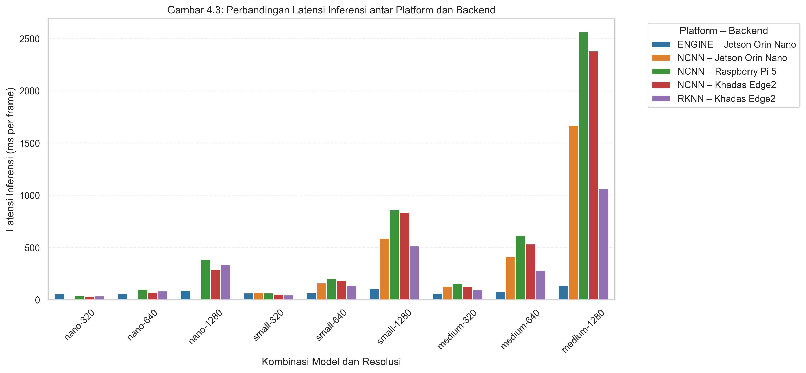
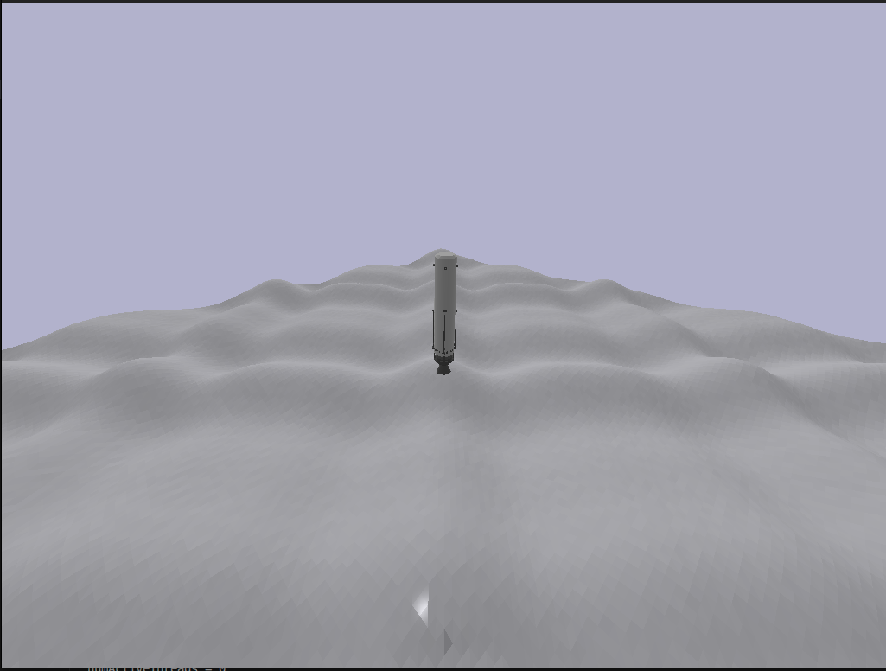
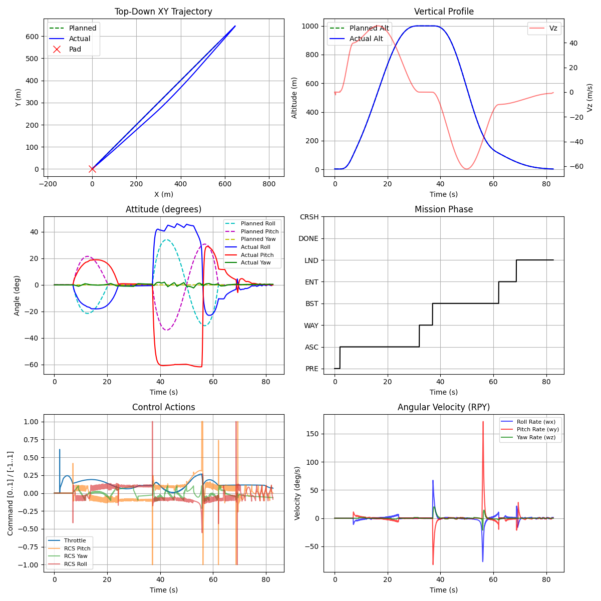
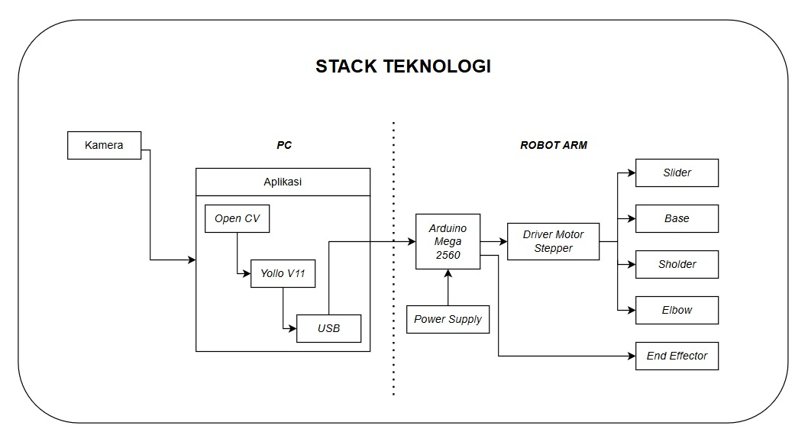
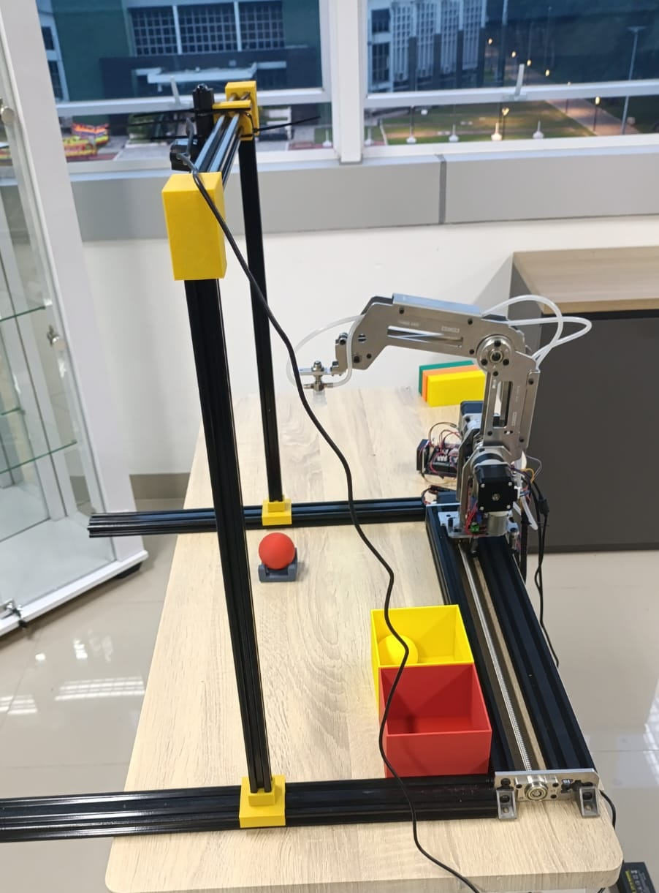

FITRA NURMAYADI
Computer & Embedded Systems Engineer
Engineering Overview & Technical Architecture
Bridging on-device intelligence, high-frequency dynamic control loops, and custom PCB hardware.
- Empirical benchmarking across SBCs & NPUs
- Hailo-8L (13 TOPS), Jetson Orin Nano, RK3588
- 1.84M INT8 Generative LLM on ESP32-S3
- Flash-mapped RAG & Vector Embeddings
- Latency, Wattage & Thermal profiling
- 3-DOF Manipulator with YOLOv11 Visual Sorting
- Inverse Kinematics & coordinate transformation
- Two-Wheeled Self-Balancing Robot (BLDC)
- High-speed optical quadrature velocity loops
- FreeRTOS dual-core multitasking control loops
- PyBullet 6-DOF Falcon 9 VTVL Simulator
- Aerodynamic crosswinds & TVC gimbal dynamics
- Deep RL algorithms: PPO, SAC, TD3, DDPG
- MuJoCo dynamic balancing environments
- Sim-to-Real policy transfer & ONNX deployment
- KiCad 2-layer PCB layout & component assembly
- ideaSTEAM XB1: ESP32 development board
- Automotive ISO 11898 CAN-Bus telemetry
- Long-range solar LoRa wireless sensor networks
- Industrial power & environmental telemetry
YOLO11-OBB SBC & Edge NPU Benchmark Suite
Empirical cross-platform evaluation of oriented object detection on edge silicon.

ESP32 Micro-LM: 1.84M On-Chip Generative Language Model
100% disconnected on-device token generation with flash-mapped RAG on ESP32-S3.
- SoC Target: ESP32-S3 (Dual-Core Xtensa LX7 @ 240 MHz)
- Octal PSRAM: 8MB memory for KV-cache and intermediate activations
- SPI Flash: 16MB mapped via MMU for zero-copy weight execution
- Power Envelope: 3.3V, < 240mA active consumption
- Firmware: Pure ESP-IDF (C++) with FreeRTOS dual-core task affinity
- Parameter Scale: 1.84M parameters customized for telemetry queries
- INT8 W8A32: Signed 8-bit integer weights, 32-bit accumulators
- Dual-Core Pipelining: Core 0 handles token decoding; Core 1 handles stream buffering & OLED display
- SIMD Acceleration: Xtensa PIE (Processor Instruction Extension) for vector dot-product speedup
- Flash-Mapped Index: Compact INT8 embeddings stored in raw flash partition
- Zero Cloud Dependency: Operates 100% offline in air-gapped industrial facilities
- Zero API Cost: No recurring cloud subscriptions or token billing
- Sub-ms Retrieval: Cosine similarity search over hardware datasheets
- Immediate Privacy: Raw telemetry never leaves the physical silicon
RocketLander3D: 6-DOF Falcon 9 VTVL Simulator & RL
Continuous 6-DOF rocketry flight simulator with thrust vectoring & aerodynamic crosswinds.


3-DOF Robotic Arm with YOLOv11 Visual Sorting
Integration of real-time machine vision, inverse kinematics, and multi-servo actuation.


Robotics & Dynamic Control Highlights
High-frequency embedded balance loops, competitive robotics, and kinematic platforms.
- Dynamic inverted-pendulum balancing robot (Hobby Research)
- Dual Nidec 24H BLDC motors with optical quadrature encoders
- MPU6050 6-axis IMU complementary sensor fusion filter
- High-frequency FreeRTOS dual-core balance loop
- Live WiFi / OSC telemetry for state debugging
- 7-channel front phototransistor array with LM339 comparators
- High-RPM coreless DC motors with magnetic hall encoders
- Non-volatile EEPROM calibration for on-track PID tuning
- Dynamic cornering braking & acceleration feedforward
- High-torque differential drive combat platform on ESP32
- On-board asynchronous web server (ESPAsyncWebServer)
- Zero-latency responsive touch GUI with dual fader controls
- SoftAP local wireless network with failsafe timeout
- 8-DOF spider robot with parametric gait kinematics
- Myo EMG armband decoding muscle biopotential signals
- Prosthetic hand teleoperation via gesture classification
- Smooth servo interpolation avoiding high current spikes
Reinforcement Learning & Physics Simulation
Evaluating continuous control algorithms in rigorous physics simulation engines.
Custom Embedded Hardware, IoT & PCB Engineering
Production-grade microcontrollers, custom PCBs, CAN-bus networks, and wireless telemetry.
- Designed 2-layer PCB in KiCad with USB-C CP2102 auto-flasher
- High-efficiency LDO regulator circuit with reverse polarity protection
- Breadboard-friendly standardized 0.1" breakout headers
- Tested and deployed for educational STEM & robotics prototyping
- Automotive ISO 11898 standard implementation via MCP2515 transceiver
- Real-time battery pack thermals, cell voltages, and motor RPM telemetry
- High-reliability differential signaling rejecting EMI/noise
- Local TFT dashboard visualization and alert trigger thresholds
- Isolated AC power meter via PZEM-004T optical UART isolation
- Monitors active power (W), voltage, current (A), energy (kWh), and frequency
- MQTT message broker telemetry published to InfluxDB and Grafana
- ESP32-C3 single-core RISC-V with WiFi & BLE 5.0
- Semtech SX1278 433 MHz LoRa transceiver with +20 dBm PA
- Deep sleep current < 15 uA powered by solar LiFePO4 battery management
- Multi-sensor array: soil moisture, air temperature, relative humidity, light
- Range > 5 km non-line-of-sight telemetry in remote farm fields
Industrial & Environmental IoT Deployments
Real-world telemetry solutions operating in aquacultural, agricultural, and residential facilities.
- Real-time dissolved oxygen (DO), pH, temperature, and water level monitoring
- Automated aerator motor control relays with hysteresis thresholds
- GSM/GPRS and Wi-Fi dual-fallback telemetry alerting farm managers
- Total Dissolved Solids (TDS) and Electrical Conductivity (EC) feedback loops
- Peristaltic dosing pumps for precision pH up/down and nutrient A/B injection
- Cyclic irrigation scheduler maintaining root oxygenation
- Barometric pressure (BME280), wind speed anemometer, rainfall tipping bucket
- Ultra-low-power battery telemetry transmitting via LoRa / MQTT
- Tested under tropical outdoor climate conditions for continuous operations
- Ultrasonic mist humidifiers and exhaust fan ventilation control
- High-humidity capacitive sensors preventing spore saturation
- Dual-relay actuation maintaining strict 85-95% RH microclimate
End-to-End Technology & Tooling Stack
Full vertical integration from schematic capture and board layout to deep learning & cloud.
- Microcontrollers: ESP32, ESP32-S3, ESP32-C3 RISC-V, STM32, Arduino
- OS & Frameworks: ESP-IDF, FreeRTOS, STM32 HAL, PlatformIO
- Protocols: CAN-Bus (ISO 11898), LoRa, I2C, SPI, UART, Modbus RS485
- EDA / CAD: KiCad (schematic & multi-layer layout), Fusion 360 (CAD/STL)
- Frameworks: PyTorch, TensorFlow Lite for Microcontrollers (TFLM)
- Edge Runtimes: Hailo Dataflow Compiler (HEF), NVIDIA TensorRT, RKNN
- Computer Vision: YOLO11-OBB, YOLOv8, OpenCV, Camera Homography
- Quantization: INT8 W8A32, PTQ (Post-Training Quantization), Flash RAG
- Physics Engines: MuJoCo, PyBullet, Farama Gymnasium
- RL Algorithms: Stable-Baselines3 (SAC, PPO, TD3, DDPG, A2C)
- Control Theory: LQR (Linear Quadratic Regulator), Cascaded PID, State-Space
- Export Formats: ONNX runtime, C++ embedded inference deployment
- Languages: Python, C/C++, JavaScript, Bash, SQL
- IoT & Telemetry: MQTT, WebSockets, OSC, REST API, ESPAsyncWebServer
- Data & Monitoring: InfluxDB, Grafana, Node-RED, Linux / Docker
- Version Control: Git, GitHub, Automated testing & documentation
Open Source Project Index & GitHub Repositories
Well-documented, verifiable engineering repositories available on GitHub.
Building High-Reliability Intelligent Systems
Committed to rigorous, first-principles engineering across the full hardware-software stack. Whether deploying INT8 quantized neural networks to resource-constrained microcontrollers, modeling 6-DOF dynamic physics environments, or routing impedance-controlled PCBs in KiCad, the objective remains clear: high reliability, verifiable empirical benchmarks, and zero unnecessary fluff.